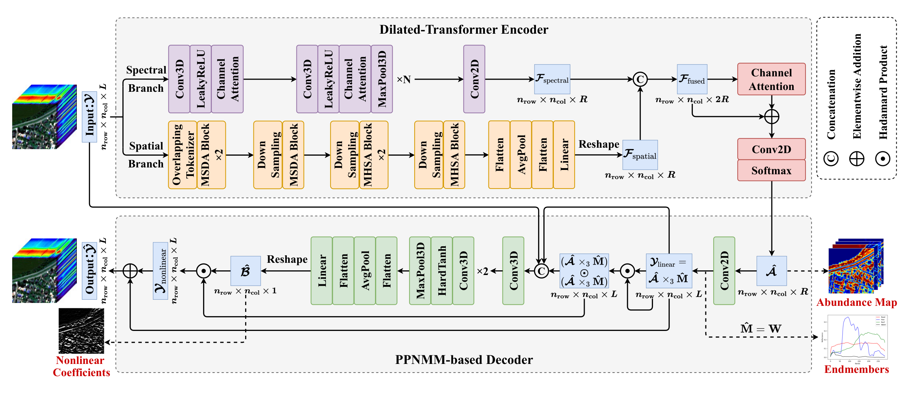

置顶
第一篇研究工作
科研旅程的起点。

DTU-Net: A Multi-Scale Dilated Transformer Network for Nonlinear Hyperspectral Unmixing
IEEE Transactions on Geoscience and Remote Sensing, vol. 64, pp. 1–17.
BibTeX 引用
@article{wang2026dtunet,
author = {Wang, Chentong and Gao, Jincheng and Zhu, Fei
and Halimi, Abderrahim and Richard, Cédric},
title = {DTU-Net: A Multi-Scale Dilated Transformer Network
for Nonlinear Hyperspectral Unmixing},
journal = {IEEE Transactions on Geoscience and Remote Sensing},
year = {2026},
volume = {64},
pages = {1--17},
doi = {10.1109/TGRS.2026.3658361}
}